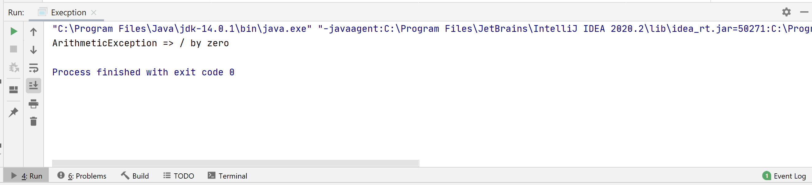
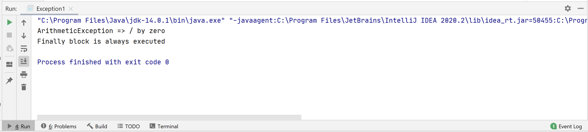
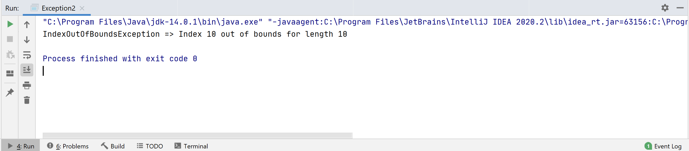
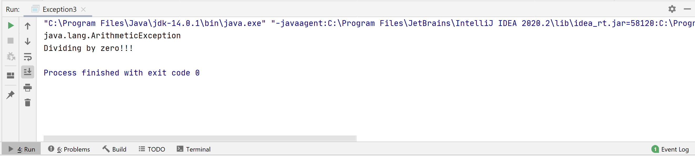
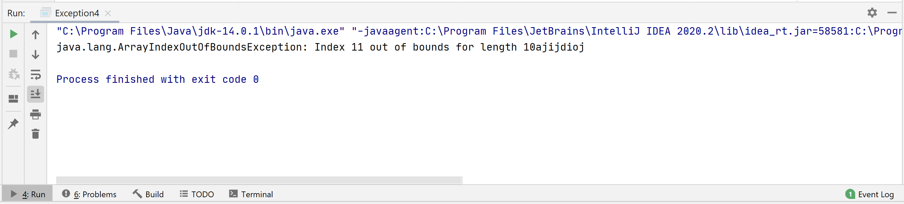

Exception is the event that disrupts the normal flow of the program. Or in other words a run-time error.
For Example:-
Although the default exception handler provided by the Java run-time system is useful for debugging, you will usually want to handle an exception yourself. To handle the run-time exceptions we use the try and catch method.
try {
// code
} catch (ExceptionType e) {
// catch block
}
class Execption {
public static void main(String[] args) {
try {
int divideByZero = 5 / 0;
System.out.println("Rest of code in try block");
} catch (ArithmeticException e) {
System.out.println("ArithmeticException => " + e.getMessage());
}
}
}

In the example,
try {
//code
} catch (ExceptionType1 e1) {
// catch block
} catch (ExceptionType1 e2) {
// catch block
} finally {
// finally block always executes
}
class Exception {
public static void main(String[] args) {
try {
int divideByZero = 5 / 0;
} catch (ArithmeticException e) {
System.out.println("ArithmeticException => " + e.getMessage());
} finally {
System.out.println("Finally block is always executed");
}
}
}

In this example, we have divided a number by 0. This throws an ArithmeticException which is caught by the catch block. The finally block always executes. Having a finally block is considered a good practice. It is because it includes important cleanup code such as:
In some cases, more than one exception could be raised by a single piece of code. To handle this type of situation multiple catch clauses can be specified. The argument type of each catch block indicates the type of exception that can be handled by it. Multiple catch blocks allow us to handle each exception differently.
Example 3: Multiple catch blocks
class ListOfNumbers {
public int[] arrayOfNumbers = new int[10];
public void writeList() {
try {
arrayOfNumbers[10] = 11;
} catch (NumberFormatException e1) {
System.out.println("NumberFormatException => " + e1.getMessage());
} catch (IndexOutOfBoundsException e2) {
System.out.println("IndexOutOfBoundsException => " + e2.getMessage());
}
}
}
class Main {
public static void main(String[] args) {
ListOfNumbers list = new ListOfNumbers();
list.writeList();
}
}

We know that an array index always starts from 0. So, when we try to assign a value to index 10, an IndexOutOfBoundsException occurs because the array bounds for arrayOfNumbers is 0 to 9. When an exception occurs in the try block,
So far we are only catching the exceptions thrown by the java run-time system. However , it is possible for program to explicitly throw exceptions, using throw keyword.
Its syntax is:
throw throwableObject;
If a method is not capable of handling the exceptions, we can use throws keyword in the method declaration to declare the type of exceptions that might occur within it.
Its syntax is:
accessModifier returnType methodName() throws ExceptionType1, ExceptionType2 … {
// Body of method
}
class Exception3 {
public static void main(String[] args) {
try{
throw new ArithmeticException();
}
catch (ArithmeticException ex) {
System.out.println(ex + "\nDividing by zero!!!");
}
}
}

In this example, we are explicitly throwing an ArithmeticException.
Example 5: Java throws Keyword
class Exception4 {
public static void exp(int arr[]){
arr[11] = 1366;
System.out.println(arr[11]);
}
public static void main(String args[]) {
int[] arr = new int[10];
try {
exp(arr);
}
catch (ArrayIndexOutOfBoundsException ex){
System.out.println(ex);
}
}
}

When we run this code, arr[11] does not exist, so its throws a ArrayIndexOutOfBoundsException. If a method does not handle exceptions , the type of exception that may occur should be sprcified in the throws block. The exp method specifies that a ArrayIndexOutOfBoundsException might occur. The main method calls this method and handles them specifically.